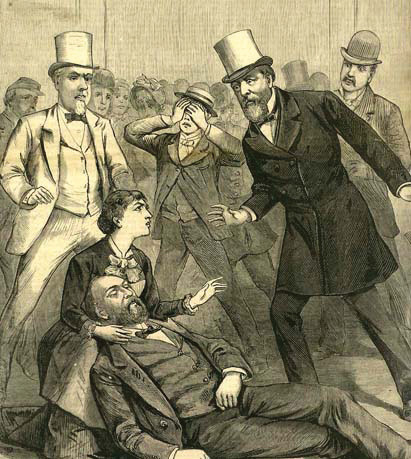

After reading this section, you should be able to answer the following questions:
The influential early-twentieth-century sociologist Max Weber suggested that bureaucracy is an efficient way to govern large, complex societies. For Weber, the ideal form of bureaucracyAn organization marked by hierarchical division of labor, internal specialization, and adherence to fixed rules. has four characteristics:
Such a depiction of bureaucratic organization and effectiveness is rarely found in the news. When the media consider bureaucracy, it is most often to excoriate it. One scholar examined a recent year’s worth of newspaper editorials and concluded, “Mismanagement, wasteful spending, ethical lapses, and just plain incompetence stimulated editorial responses regularly.…By contrast, editors rarely devoted much space to agencies’ success.”Jan P. Vermeer, The View from the States: National Politics in Local Newspaper Editorials (Lanham, MD: Rowman & Littlefield, 2002), 93–94. Likewise, television news zeroes in on waste, fraud, and abuse. Reporters provide new episodes of recurring segments such as ABC’s “Your Money” and NBC’s “The Fleecing of America.” The federal bureaucracy is a favorite target.
This frame finds government bureaucracies rife with incompetence and bureaucrats squandering public funds. The millions of dollars misspent are drops in the bucket of a federal budget that is more than a trillion dollars; but bureaucratic inefficiency, if not ineptitude, seems to be the rule, not the exception.
Such stories are easy for journalists to gather—from investigations by the Government Accountability Office of Congress, from congressional hearings, and from each agency’s inspector general. Thus the media widely covered the damning reports of the inspector general of the Securities and Exchange Commission on the reasons for the agency’s failure, despite many warnings and complaints from credible sources, to investigate Bernard Madoff’s $65 billion Ponzi scheme.Zachery Kouwe, “In Harsh Reports on S.E.C.’s Fraud Failures, a Watchdog Urges Sweeping Changes,” New York Times, September 30, 2009, B10.
Entertainment media depictions of bureaucracy are often negative. The movie The Right Stuff (1983), based on Tom Wolfe’s best-selling history, eulogizes an era of test pilots’ daring individualism. Test pilot Chuck Yeager bravely and anonymously breaks the sound barrier and then returns to the fraternity of fellow pilots in a tavern whose walls are covered with pictures of gallant men lost in the quest. But when the Soviet Union launches the Sputnik satellite in 1957, panic-stricken Washington sends buffoonish bureaucrats to recruit test pilots—excluding Yeager—into a stage-managed bureaucracy for the astronauts chosen to go into space.
The entertainment media do sometimes show bureaucracy as collectively effective and adaptable. Apollo 13 (1995) portrays NASA and its astronauts as bureaucratic and heroic. After a blown-out oxygen tank aboard the space capsule threatens the lives of three astronauts, the NASA staff works to bring them back to Earth. The solution to get the astronauts home is clearly an ingenious collective one thought up by the various NASA workers together.
Bureaucracy is the problem in The Right Stuff and the solution in Apollo 13. The Right Stuff tanked at the box office. Apollo 13 cleaned up, probably because of its reassuring story, tribute to the astronauts’ gallantry (it is hard to view astronauts as bureaucrats), and happy ending.
We will show that the federal bureaucracy is far more complex than the media allow. Then, at the end of the chapter, we will discuss the bureaucracy in the information age.
The federal bureaucracy is not explicitly laid out in the Constitution. It was never instituted and planned; it evolved by the gradual accretion of agencies and tasks over time.
When Thomas Jefferson became president in 1801, the administrative civilian workers employed by the federal government—the civil serviceThe administrative civilian workforce employed by the federal government.—numbered under three thousand. One-third of them were part-time employees. Nine-tenths worked outside Washington, DC.Paul P. Van Riper, History of the United States Civil Service (Evanston, IL: Row, Peterson and Company, 1958), 19.
When political parties developed, so did the practice of rewarding friends and allies with jobs and grants. It was also a democratic reaction to an era when the bureaucracy was run by aristocrats. Andrew Jackson made political patronageThe distribution of governmental jobs and grants to members and allies of the political party in power. a matter of principle when he became president in 1829. He wanted to make sure that federal workers were accountable to the executive branch—and to him as president.Matthew A. Crenson, The Federal Machine: Beginnings of Bureaucracy in Jacksonian America (Baltimore: Johns Hopkins University Press, 1975); Daniel P. Carpenter, The Forging of Bureaucratic Autonomy: Reputations, Networks, and Policy Innovation in Executive Agencies, 1862–1928 (Princeton, NJ: Princeton University Press, 2001), chap. 2. His ally, Senator William Marcy cried, “To the victors belong the spoils!” And Jackson’s detractors coined the term the spoils systemThe term given by its detractors to the practice started by President Andrew Jackson in 1829 of a new president replacing all civil servants with party faithful.: when the party in power changed, there was a full-scale replacement of officials by party faithful—who donated some of their salary to party coffers.
After the Civil War, the federal government grew enormously. Presidents and legislators were overwhelmed with finding jobs for party members. Representative James Garfield griped in 1870, “[O]ne-third of the working hours of senators and representatives is hardly sufficient to meet the demands made upon them in reference to appointments of office.”Ronald N. Johnson and Gary D. Libecap, The Federal Civil Service System and the Problem of Bureaucracy: The Economics and Politics of Institutional Change (Chicago: University of Chicago Press, 1994), 18. Garfield was elected president ten years later, during which time the federal government workforce almost doubled (from 51,020 in 1870 to 100,020 in 1880). As president, Garfield was besieged with requests for patronage. He did not satisfy everyone. In 1881, Charles Guiteau, frustrated in his bid for a high-ranking appointment, shot Garfield in a Washington train station. Garfield’s long agony, eventual death, and state funeral made for a dramatic continuing story for newspapers and magazines seeking a mass audience. The media frenzy pushed Congress to reform and restrict the spoils system.
The Garfield Assassination
Learn more about the Garfield assassination at http://americanhistory.si.edu/presidency/3d1d.html.
Figure 14.1 Garfield’s Assassination
Congress passed the Pendleton Act in 1883.Ourdocuments.gov, “Pendleton Act (1883),” accessed April 4, 2011, http://www.ourdocuments.gov/doc.php?flash=old&doc=48. The act sorted federal employees into two categories: merit and patronage. In a merit systemThe practice of classifying positions in the civil service according to technical standards and of naming civil servants to lifetime appointments based on tests or advanced training., jobs are classified and appointments are made on the basis of performance determined by exams or advanced training. The merit system at first covered only 10 percent of the civil service, but presidents and Congress gradually extended it to insulate agencies from each other’s political whims.Ronald N. Johnson and Gary D. Libecap, Federal Civil Service System and the Problem of Bureaucracy: The Economics and Politics of Institutional Change (Chicago: University of Chicago Press, 1994); Stephen Skowronek, Building a New Administrative State: The Expansion of National Administrative Capacities, 1877–1920 (New York: Cambridge University Press, 1982), chap. 3. By its peak in the 1920s, 80 percent of civil servants held merit positions.
The merit system has shrunk since the 1920s.Patricia Wallace Ingraham, The Foundation of Merit: Public Service in American Democracy (Baltimore: Johns Hopkins University Press, 1995). Just under half of today’s civilian federal workers are merit employees. A notable reform in 1978 instituted the Senior Executive Service, a merit pool of highly trained, highly experienced, highly educated, and highly paid officers that managers can move and transfer at will.
In 2002, President George W. Bush got Congress to give him discretion over whether 170,000 employees of the new Department of Homeland Security fall under the merit system; presidents can move employees in that department in or out of the civil service as they deem conditions dictate. Bush wished to go further: he unsuccessfully sought to transfer up to 850,000 government jobs to private companies, which he claimed would cut costs and enhance efficiency.Richard W. Stevenson, “The Incredible Shrinking Government, Bush Style,” New York Times, December 8, 2002, Week in Review, 4.
The line between the merit system and politicized hiring and firing is not always clear. Consider US attorneys who prosecute federal crimes. They are appointed by the president, usually from his party, but it is understood that they will operate without partisanship. That is, they will not base their decisions on the interests of their party. In 2006, eight US attorneys were dismissed, allegedly at the direction of the Bush White House because of their reluctance to serve Republican interests by, for example, investigating Democratic officeholders and office seekers for corruption. The story was widely and, as new revelations appeared, continually reported in the media. It led to investigative hearings in the Democrat-controlled Congress.
Then, in July 2008, the Justice Department’s inspector general and internal ethics office revealed that senior aides to Attorney General Alberto R. Gonzalez had in fact broken civil service laws by using political criteria in making nonpolitical career appointments in the department; the inspector general and ethics office also revealed that White House officials were actively involved in some of the hiring decisions. Screened in interviews and through Internet searches, people had been hired if they were conservative on “god, guns + gays.”Eric Lichtblau, “Report Faults Aides In Hiring At Justice Department,” New York Times, July 29, 2008, A1 and 16.
Detailed rules and procedures govern hiring, promoting, and firing civil servants. To simplify and standardize the process, each position gets a GS (General Schedule) rating, ranging from GS 1 to GS 18, which determines its salary.
Unlike other parts of government, women and racial and ethnic minorities are well represented in the civil service. Women are 46 percent of the civilian workforce and 43 percent of the federal workforce. People of color are 26 percent of the civilian workforce and 29 percent of the federal workforce. But women and people of color are clustered at lower levels of the civil service. Those at higher levels are largely white and male.Katherine C. Naff, To Look Like America: Dismantling Barriers for Women and Minorities in Government (Boulder, CO: Westview Press, 2001). Lifetime job security allows many civil servants to stay in government until retirement or death, so progress into high-level positions is slow.
It is hard to get an overall picture of the federal bureaucracy. First, rather than unfold from a master plan, the bureaucracy developed piecemeal, with agencies and departments added one at a time. Second, many federal responsibilities are not carried out by federal employees but by state and local government workers under federal mandates and by private companies contracted for services.
The thousands of agencies in the federal bureaucracy are divided into rough, often overlapping areas of specialization. The division of labor easily defies logic. A food writer’s overview of government regulation of food found thirty-five distinct laws implemented by twelve offices within six cabinet departments. For instance, “The Department of Agriculture oversees production of hot dogs cooked in pastry dough and corn dogs, while for no discernible reason, the Food and Drug Administration regulates bagel dogs and hot dogs meant to be served in buns.”Marion Burros, “Something to Read Before Your Next Meal,” New York Times, April 23, 2003, D3.
Any attempt to make sense of this complex structure and to find an agency’s place in the overall bureaucracy does little more than bolster an image of mind-numbing intricacy.
The Nightmare Organizational Chart
Organizational charts were designed to give clear and easy indications of the chain of command and who reports to whom. They are equally byzantine for large corporations as for government. But they are often used in political debate to show the sheer incomprehensibility of bureaucracy.
This tactic was famously used in 1993 by Senate Republican leader Bob Dole (R-KS) when he opposed First Lady Hillary Rodham Clinton’s ambitious health-care reform proposal. The picture of Dole and the nightmare organizational chart was widely circulated and contributed to the proposal’s demise the next year. Ten years later, Republicans in the Senate proposed a reform of the Medicare system. Then-senator Hillary Rodham Clinton (D-NY) took to the floor of the Senate with nightmare organizational charts of what the Medicare system would look like if Republicans had their way.
Images endure when they can be used again and again for multiple purposes by multiple players. Hillary Clinton showed that, in politics as in life, turnabout is fair play.
Bob Dole (1993) on Senate Floor in Front of Chart Depicting Hillary Clinton’s Health-Care Proposal
Watch Bob Dole use a complex chart to explain Hillary Clinton’s health care proposal.
Complicating the federal bureaucracy, there are several types of agencies. We look at the four main ones: (1) cabinet departments, (2) independent executive agencies, (3) government corporations, and (4) regulatory commissions.
Fifteen agencies are designated by law as cabinet departmentsThe major administrative units responsible for specified broad areas of government operations, headed by a cabinet secretary appointed by the president and confirmed by the Senate.: major administrative units responsible for specified areas of government operations. Each department controls a detailed budget appropriated by Congress and has a designated staff. Each is headed by a department secretary appointed by the president and confirmed by the Senate. Many departments subsume distinct offices directed by an assistant secretary. For instance, the Interior Department includes the National Park Service, the Bureau of Indian Affairs, and the US Geological Survey.
Department secretaries are automatically members of the president’s cabinet. For other agency heads, it is up to the president’s discretion: President Clinton elevated the head of the Federal Emergency Management Agency (FEMA) to the cabinet, but the position lost cabinet status under President George W. Bush.
Cabinet departments are not equally prominent in the news. A few, such as the Departments of State, Defense, Treasury, and Justice, are covered by newsbeat reporters who regularly focus on their activities and personnel. Other departments attract consistent interest of reporters of specialized publications. No department can assume obscurity, since crises and unexpected events may thrust it into the news. For example, the Department of Energy was suddenly newsworthy after a massive power blackout in the Northeast in the summer of 2003.
The remaining government organizations in the executive branch outside the presidency are independent executive agenciesAgencies similar to cabinet departments but usually with smaller jurisdictions.. The best known include NASA, the Environmental Protection Agency (EPA), and the Social Security Administration (SSA). Apart from a smaller jurisdiction, such agencies resemble cabinet departments. Their heads are appointed by (and report directly to) the president and confirmed by Congress. They simply lack the symbolic prestige—and literal place at the table—of a cabinet appointment. Independent executive agencies can smoothly become cabinet departments: in 1990, Congress upgraded the Veterans Administration to the cabinet-level Department of Veterans Affairs.
Some agencies, such as the US Postal Service and the national rail passenger system Amtrak, are government corporationsAgencies that provide services for which they charge fees, usually under a government-granted monopoly, with the hope they will be fiscally self-sustaining.. They charge fees for services too far-reaching or too unprofitable for private corporations to handle. Ideally, they bring in enough funds to be self-sustaining. To help them make ends meet, Congress may give government corporations a legal monopoly over given services, provide subsidies, or both.John T. Tierney, “Government Corporations and Managing the Public’s Business,” Political Science Quarterly 99 (Spring 1984): 73–92. Government corporations are more autonomous in policymaking than most agencies. For instance, the Postal Rate Commission sets rates for postage on the basis of revenues and expenditures.
Complicating the picture are the Federal National Mortgage Association (FNMA), known as Fannie Mae, and the Federal Home Loan Mortgage Corporation (FHLMC), known as Freddie Mac. These were government-sponsored enterprises and also stockholder-owned corporations. As of 2008, they owned or guaranteed about half of the country’s $12 trillion mortgage market. Thus, as we discuss in Chapter 16 "Policymaking and Domestic Policies", they were both partly responsible for and victims of the severe decline in the housing market. In September 2008, as their stock prices declined precipitously and they sank ever deeper into debt, they were taken over by the Federal Housing Finance Agency (FHFA). This was an extraordinary intervention by the federal government in the financial market.
In the late nineteenth century, the Industrial Revolution provoked economic regulationThe use of governmental oversight, particularly of the economy, intended to protect the public interest and ensure fairness., the use of governmental power to protect the public interest and try to ensure the fair operation of the economy. This new domain was paired with an innovation, the regulatory commissionAn agency charged with writing rules and arbitrating disputes dealing with some specific part of the economy, with appointees having greater independence from Congress and the president., an agency charged with writing rules and arbitrating disputes in a specific part of the economy. Chairs and members of commissions are named by the president and confirmed by the Senate to terms of fixed length from which they cannot be summarily dismissed. (Probably the most prominent regulatory commission in the news is the Federal Reserve Board [known as “the Fed”]. We discuss it in Chapter 16 "Policymaking and Domestic Policies".)
Regulatory commissions’ autonomy was meant to take the politics out of regulation. But “most regulatory commissions face united, intensely interested industries, and passive, fragmented, and large consumer groups.”Jack H. Knott and Gary J. Miller, Reforming Bureaucracy: The Politics of Institutional Choice (Englewood Cliffs, NJ: Prentice Hall, 1987), 127. They may become unsympathetic to the regulations they are supposed to enforce, even liable to being captured by the industries they are supposed to regulate. Consider the Federal Communications Commission (FCC). It grants licenses to radio and television broadcast frequencies in exchange for vague promises to pursue “the public interest.” Broadcasters are well organized, but viewers and listeners are not; the FCC’s policies have favored commercial broadcasters. If the FCC does diverge from industry views, its decisions can be repealed by Congress. Broadcasters’ power is weak only when the industry itself is divided.
Politicians pledge to shrink the size and enhance the efficiency of the federal bureaucracy. By one measure—how many civilian federal employees there are—they have succeeded: the number has not increased since the 1960s.
How, then, are politicians able to proclaim that “the era of big government is over” while providing the increase in government services that people expect? They have accomplished this by vastly expanding the number of workers owing jobs to federal money. As a result, over sixteen million full-time workers administer federal policy.
There is the federal civilian workforce of 1.9 million, uniformed military personnel of 1.5 million, and 850,000 postal workers. Add “the federal shadow workforce,” state and local government workers subject to federal mandates (discussed in Chapter 4 "Civil Liberties"). They devote, on the average, one-fourth of their work carrying out federal directives. There are 16.2 million state and local government workers, so the federal government does not need to hire approximately 4.05 million workers to carry out its policies.
There are billions of dollars annually in federal grants and contracts. Grants, such as those for highway construction, scholarly research, job training, and education, go through state and local government to private contractors. The government contracts with private companies to provide goods and, more recently, services in ways rarely reported in the news. The fact that the Defense Department contracted out for military interrogators and security officers in war zones did not become public knowledge until the Abu Ghraib prison abuse scandal broke in April 2004. The federal government directly supports 5.6 million jobs through contracts and 2.4 million jobs through grants.Paul C. Light, The True Size of Government (Washington, DC: Brookings, 1999), 19–30; also Donald F. Kettl, Sharing Power: Public Governance and Private Markets (Washington, DC: Brookings, 1993).
As a result of the reliance on mandates and contracts, fewer and fewer civil servants directly interact with and provide services to the public as “street-level bureaucrats.”Michael Lipsky, Street-Level Bureaucracy: Dilemmas of the Individual in Public Services (New York: Russell Sage Foundation, 1980). Instead, federal employees are, more and more, professionals and managers. From the 1960s to the 1990s, even as the size of the civil service stayed constant, the number of senior executives and political appointees in the bureaucracy more than quintupled.Paul C. Light, Thickening Government: Federal Hierarchy and the Diffusion of Accountability (Washington, DC: Brookings, 1995), 7.
This proliferation of managers creates “thickening government.” The average number of layers between president and street-level bureaucrat swelled from seventeen in 1960 to thirty-two in 1992, as new administrative titles multiplied in bewildering combinations of “assistant,” “associate,” “deputy,” and “principal” to monitor, streamline, and supervise state and local workers, contractors, and grantees—and each other. Consequently, much of the federal bureaucracy now consists of “managers managing managers.”
The federal bureaucracy is the sum total of all executive agencies and personnel. It is a complicated mix. It contains civil servants with lifetime merit appointments and political appointees. It includes distinct kinds of agencies. And its small size is misleading because some federal responsibilities are carried out through mandates to state and local governments and by the contracting out of goods and services.